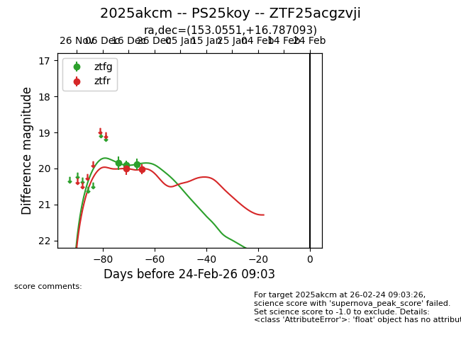
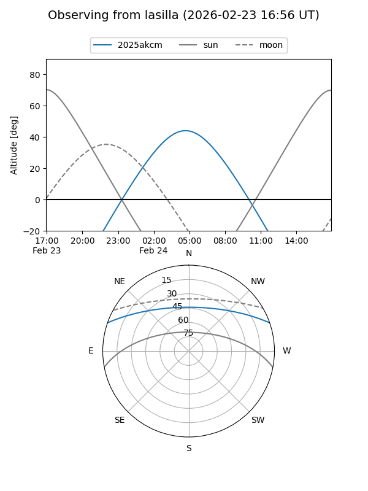
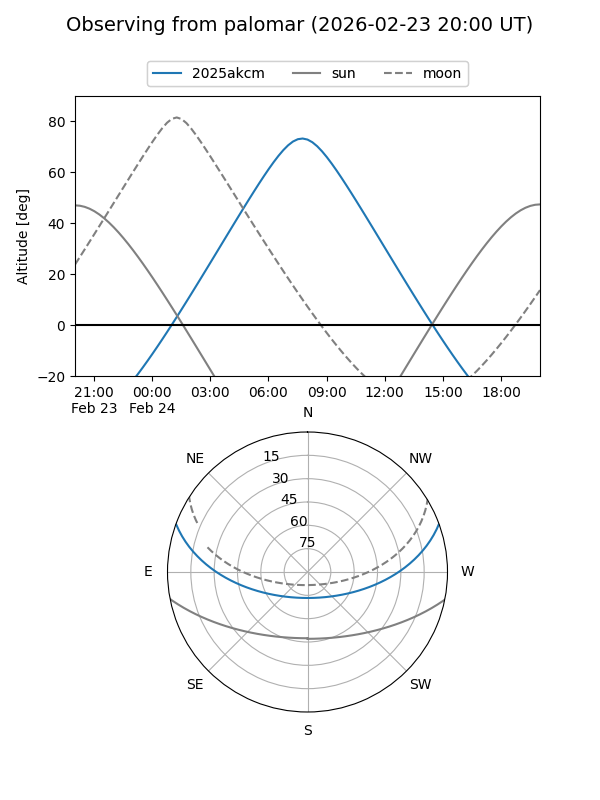
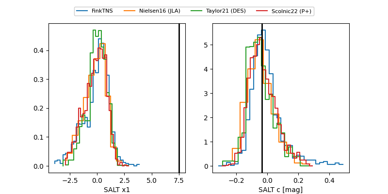

2025akcm
Target 2025akcm at 2025-12-30 21:03
Aliases and brokers:
FINK: fink-portal.org/ZTF25acgzvji
Lasair: lasair-ztf.lsst.ac.uk/objects/ZTF25acgzvji
ALeRCE: alerce.online/object/ZTF25acgzvji
TNS: wis-tns.org/object/2025akcm
YSE: ziggy.ucolick.org/yse/transient_detail/2025akcm
alt names
ZTF25acgzvji (ztf,fink_ztf)
2025akcm (tns,yse)
PS25koy (panstarrs)
Coordinates:
equatorial (ra, dec) = 153.0551,+16.78709
equatorial (HMS+DMS) = 10:12:13.21,+16:47:13.53
galactic (l, b) = (220.2152,+51.83900)
Flags:
Photometry:
last ztfg=19.88, ztfr=20.02
3 ztfg, 2 ztfr detections
Lightcurve

Visibility


Additional plots
